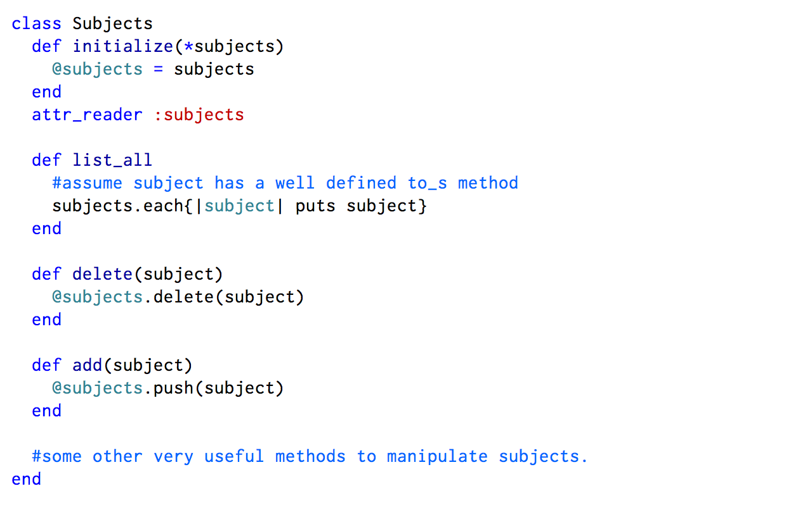
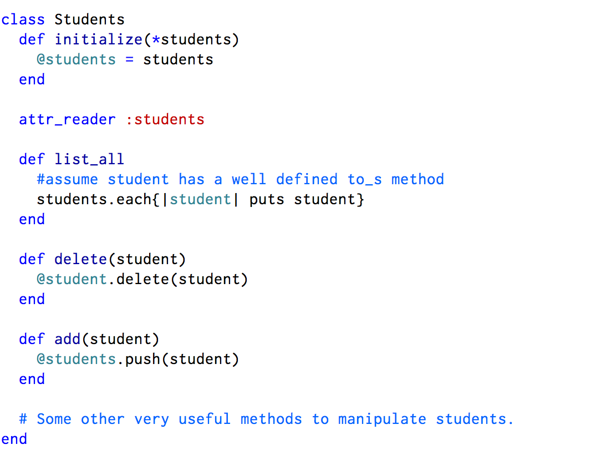
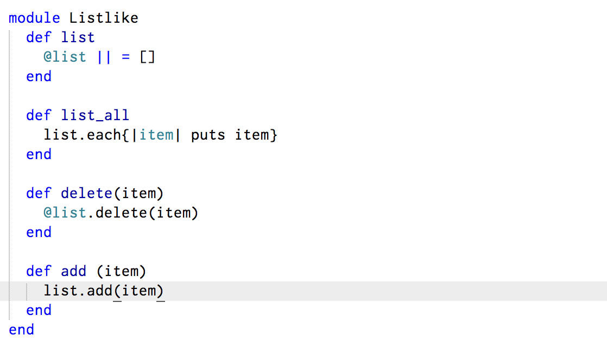
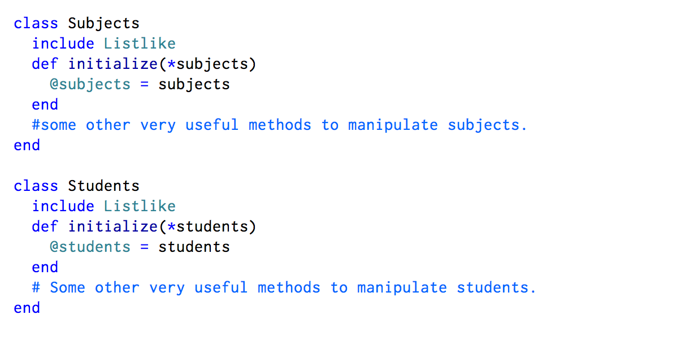

Classes and Modules
May 17, 2015.
In my last blog post, I talked a bit about Ruby Classes and how important Objected Oriented Programming is. I also mentioned that Object Oriented Programming is useful for grouping items with similar behavior together in one class. The importance of OOP cannot be overstated. As a result of this, Ruby provides another construct which can also be useful in Object Oriented design. This construct is called Module
In Ruby, Modules are similar to classes in so many ways. Just like classes, Modules can be used to group a lot of similar methods together. In order to create a Module, we use the keyword "module". For instance, say we wanted to create a module called Arithmetic. We would do:
module Arithmetic
end
Obeserve that this is similar to creating a class, except that we use the keyword module instead of class.
The use of modules is slightly different from that of classes. One major difference between modules and classes is that you can't have instances of modules. In order to use the functionality of a module, you would have to mix it into a class. This can be done by either using the include keyword, or the prepend keyword.
In order to explain how a module can be helpful, consider the illustration below. Say we wanted to have a class called Subjects that lets you have a list of subjects, display all subjects, add and delete subjects. We can do something like the following:

Doesn't look terrible to code. Pretty simple. Now say, we wanted to create a Students class that lets you have a list of students, display all students, add and delete students. We can do the following:

The above classes are too bad. The methods are pretty straight forward. But one thing we notice is that this code is not DRY(Don't Repeat Yourself). In order words, there is a significant amount of redundant repetition. Notice that the 2 classes have very similar methods, in fact, almost identical. The methods are list_all, delete, and add. This is where the idea of modules can become useful. When we observe such similarities among methods from different classes, it's kind of a trigger to start thinking about modules. We can define a module that has these methods and simply mix in the module to the classes. The module will look like:

And then, After re-writing the classes, they would look like:

Notice that we've gotten rid of some redundancy. In fact, there is a beautiful side effect. Say Bill Gates wanted to define a class called "Cars" which can be used to keep track of all the cars he has. He would probably need methods like list_all, add, and delete to keep track of his cars. He wouldn't need to re-write those methods. He can simply mix the Listlike module into his program so he can have access to those methods without having to re-write them so he use him time more productively.
Understanding the concepts of modular design is very useful in OOP. Ruby makes it easier by providing easy to use classes, and modules which can help you to make your code more DRY.